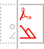

Accurate, consistent PDF rendering
Whether on dynamic or static pages, deliver the highest quality PDF rendering available
Customizable user experience
Choose exactly how to display a PDF and use the callbacks and annotations APIs to provide programmatic control and enable digital collaboration
Analytics on PDF usage
Use analytics to understand how users interact with PDFs, including time spent on a page and searches
Key Features of Our PDF Embed API
Integrations

Adobe Experience Manager
Adobe Experience Manager customers can easily drag and drop a high-fidelity PDF viewer directly into web applications without the need for additional code or customizations. Includes pre-configurable settings for comments, printing, downloading, and integrated Adobe Analytics.
Learn more

Adobe Analytics
Out of the box Adobe Analytics integration allows customers to seamlessly enable rich analytics and gain insights on end user experience. Extend functionality with chatbots or calls to action based on user interactions.
Learn more
Use Cases for PDF Embed API
Document Collaboration
Create compelling work-at-home experiences with PDF Embed API:
- Enable real-time team collaboration using comments, highlighting, and drawing tools
- Analyze usage statistics to gain insights into document consumption and interaction patterns
Common use cases: Insurance workflows, publishing applications, marketing asset approvals
Document Viewing
Use PDF Embed API for a rich end user document viewing experience:
- Provide consistent, embedded PDF viewing with analytics for custom reports, documents of record, and forms
- Integrate callbacks to provide event driven chats with helpful tips, information links, and context-specific details
Common use cases: Financial reports, real estate and legal transactions
Learn about our PDF Tools API for programmatic document manipulation